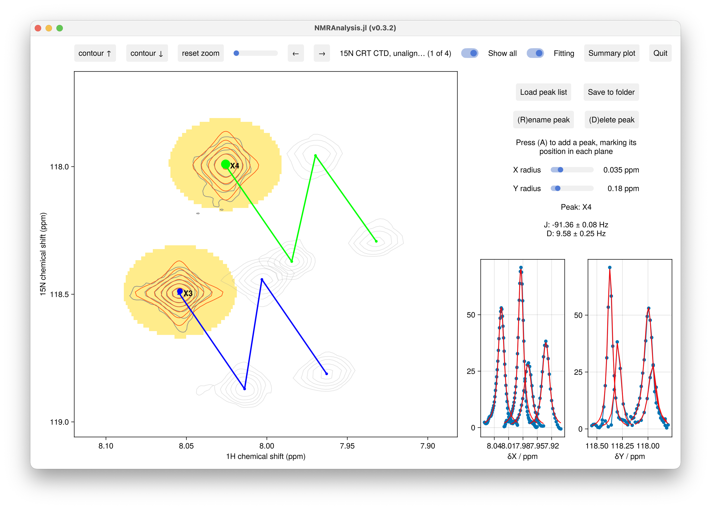

Couplings and RDCs
rdc2d measures one-bond scalar couplings (J) and residual dipolar couplings (D) from the separation between paired component spectra. It is a peak-tracking analysis: a residue's peak appears at a slightly different position in each component, and the difference in the coupling dimension gives the coupling.
You record two conditions — isotropic (gives J) and aligned (gives J + D) — and for each you supply the two doublet-component spectra (already combined, e.g. IPAP α/β, or HSQC/TROSY):
using NMRAnalysis
rdc2d(isotropic = ["expt/1", "expt/2"],
aligned = ["expt/11", "expt/12"])The four spectra become the planes of a peak-tracking experiment. Add a peak for each residue (A, marking its position in each plane), and the per-residue analysis reports:
\[J = \mathrm{sep}(\text{isotropic}) \times \text{scale}, \qquad J + D = \mathrm{sep}(\text{aligned}) \times \text{scale}, \qquad D = (J + D) - J\]
where $\mathrm{sep}$ is the position difference between the two components in the coupling dimension, converted to Hz.

Arguments
isotropic,aligned: each a two-element vector of the component spectra[A, B].scale: the fraction of the coupling that the measured separation represents —1for IPAP (separation is the full coupling) or0.5for HSQC/TROSY (separation is half).coupling: the dimension the splitting is measured in (:F1or:F2). Defaults to the heteronuclear dimension.
Sign convention
The coupling sign is flipped automatically when the coupling dimension is ¹⁵N (negative gyromagnetic ratio), so $^1J_\text{NH}$ comes out around −93 Hz. List the two components in the same order for both the isotropic and aligned conditions; if J appears with the wrong sign, swap the pair (this corrects both J and D).
Output
The peak-info panel shows J and D (± uncertainty) for the selected residue. Save to folder writes them to results.csv, and the summary plot shows D against residue number.